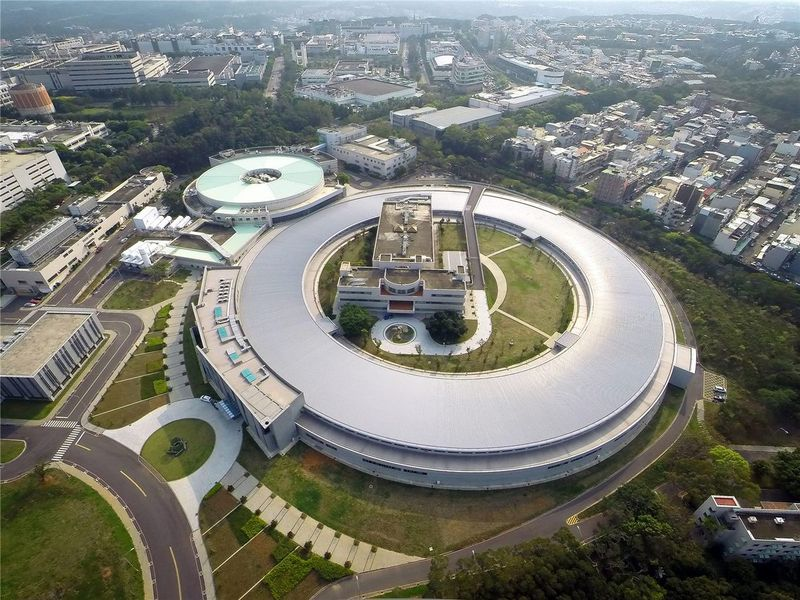
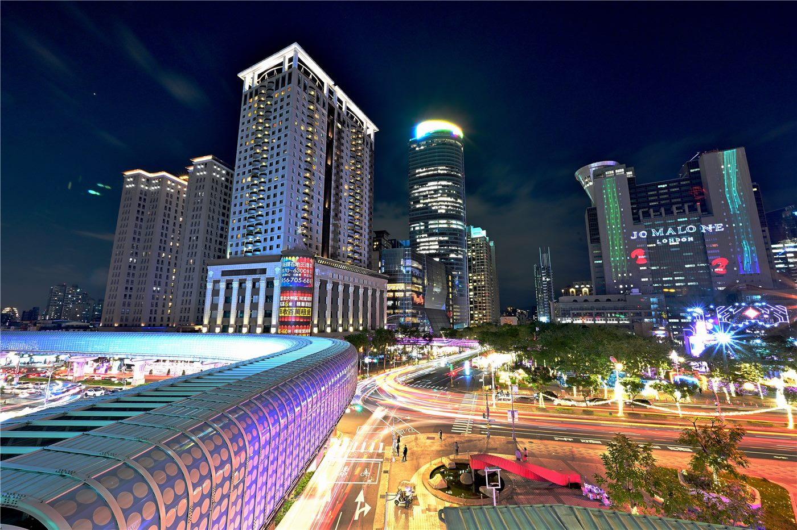
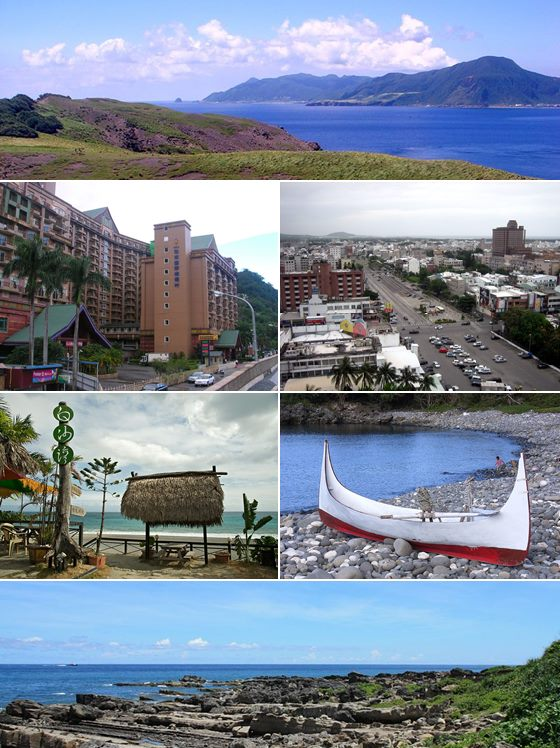

橋대만
대만라이칭더 대만 총통 취임 2주년… '인재·민생' 국정 행보
취임 2년을 맞은 라이칭더 총통이 평화·안정과 민생을 국정 기조로 제시했다. 대만은 인재 유치 제도를 본격 시행 중이다.
취임 2년을 맞은 라이칭더 총통이 평화·안정과 민생을 국정 기조로 제시했다. 대만은 인재 유치 제도를 본격 시행 중이다.

해외 화인 청년의 취업·정착 문이 넓어졌다. 졸업생은 허가 없이 2년 근무, 전문인력은 1년 거주 후 영주 신청.

경제부가 6월 14일 발표한 자료에 따르면, 대만 해상풍력 발전단지가 12일 500번째 풍력기 설치를 마쳤다. 누적 설비용량은 4.8GW에 이른다. 단년 신규 설치는 세계 3위, 누적 용량은 세계 5위 수준이다. 에너지 전환의 한 분기점이자, 산업·고용·전력 안정이 얽힌 복합 과제다.

양안 민간 교류 행사가 13일 푸젠성 샤먼에서 열렸다. 대만 대륙위원회는 공무원·공직자 참가를 제한했다.

고용 지표가 3년 넘게 증가세를 이어갔다. 노동시장의 상대적 안정이 확인된다.

AI 반도체 수요 속에 TSMC 기업가치가 가파르게 올랐다. 회사는 올해 매출 약 30% 성장을 제시했다.

여야 후보가 신베이 시장 선거를 앞두고 신주민(결혼이민자 등) 정책과 표심에 공을 들인다.

국민당 주석의 14일간 방미 일정이 마무리됐다. 미 국무부 면담 격을 둘러싼 해석이 엇갈린다.

최근 10년 통계에서 6월과 7월의 상승 확률이 높게 나타났다. 증권거래소는 창신판 IR 행사를 예고했다.

이달 들어 대만 보건당국이 콩고민주공화국·우간다발 무증상 입국자를 대상으로 4개 국제공항에서 자율 무료 채혈검사를 시행 중이다. WHO의 국제 공중보건 비상사태 선포에 따른 국경 방역 강화다.

전통 24절기를 축으로 한 농촌 체험 여행 기획이 선보였다. 지역 문화·제철 물산과 결합한 한정 일정이다.

6월 중순 정체 전선과 서남기류로 비가 다시 강해졌다. 기상 당국은 호우 대응 작업 가능성을 열어 뒀다.